ALAN session 16:02:53 to 16:25:24
Decoded from the raw bytes in gs_log_20261118_160241.txt. Times are ground station local time. Data: telemetry.csv, commands.csv
Session length
22.5 min
16:02:53 to 16:25:24
Packets received
1,296
55 lost (4.1%)
Boat restarts
1
16:04:18
Distance sailed
568 m
sum of GPS fixes
Commands confirmed OK
29
of 65 sent, heartbeats not counted
Last acknowledged command
#76
sent 16:23:15, 5 sent after it never acknowledged
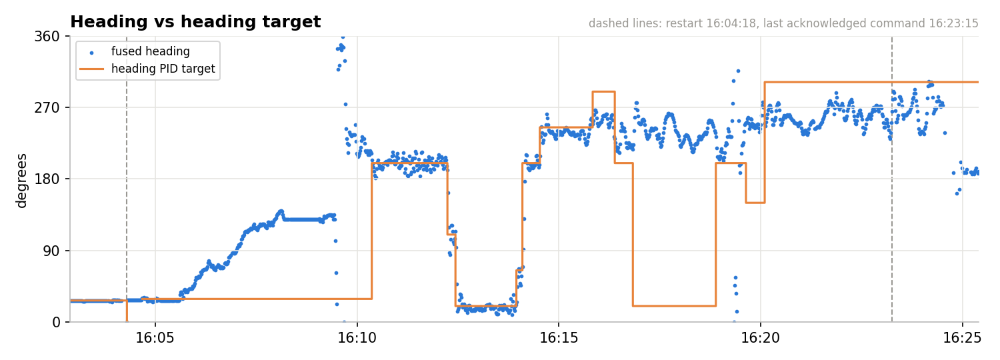
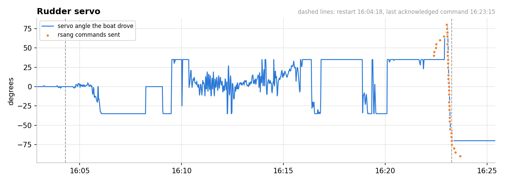
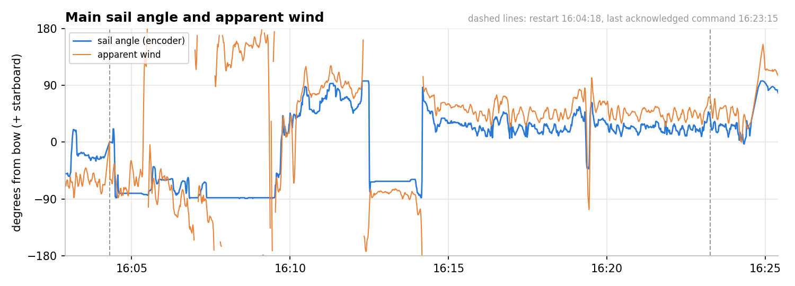
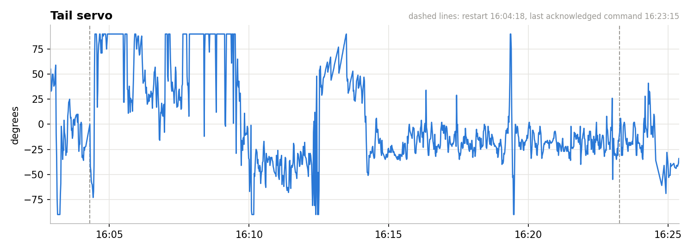
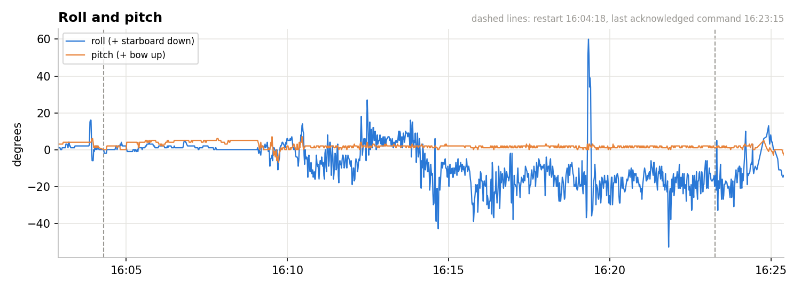
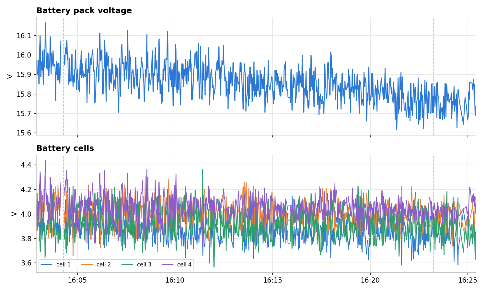
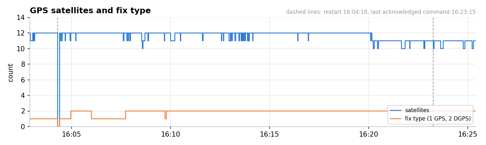
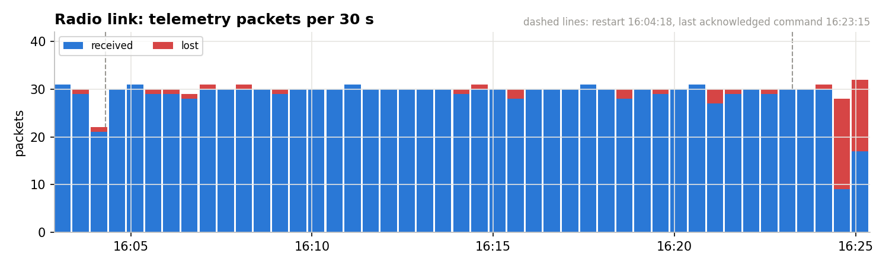
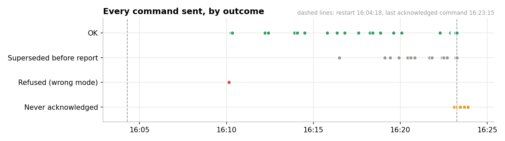
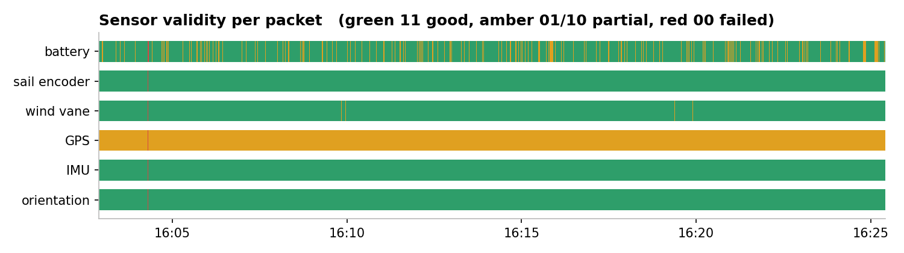
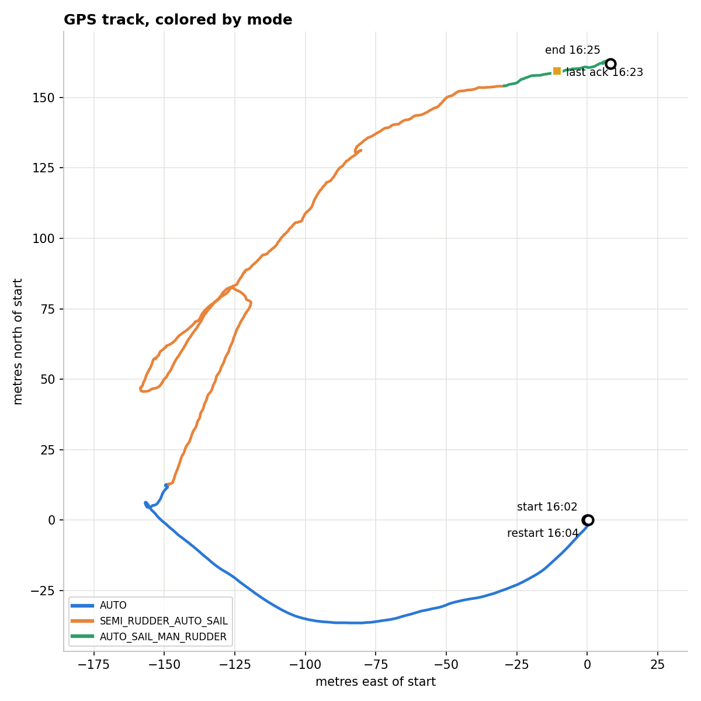
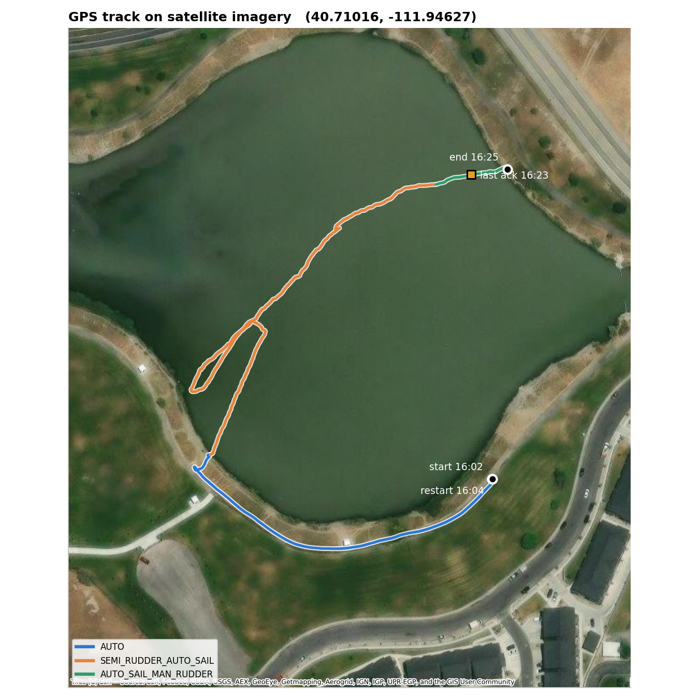
Command log
The boat reports only its last command, once a second: "Superseded" ones were followed by another before a report and may still have run.
| Sent | Seq | Command | Outcome |
|---|---|---|---|
| 16:10:08 | 17 | head 200 | Refused (wrong mode) |
| 16:10:15 | 18 | mode SEMI_RUDDER_AUTO_SAIL | OK |
| 16:10:20 | 19 | head 200 | OK |
| 16:12:12 | 20 | head 110 | OK |
| 16:12:24 | 21 | head 20 | OK |
| 16:13:54 | 22 | head 65 | OK |
| 16:14:03 | 23 | head 200 | OK |
| 16:14:29 | 24 | head 245 | OK |
| 16:15:48 | 25 | head 290 | OK |
| 16:16:21 | 26 | head 200 | OK |
| 16:16:29 | 27 | head 20 | Superseded before report |
| 16:16:48 | 28 | head 20 | OK |
| 16:17:36 | 29 | head 20 | OK |
| 16:18:15 | 30 | mode SEMI_RUDDER_AUTO_SAIL | OK |
| 16:18:24 | 31 | head 20 | OK |
| 16:18:51 | 32 | head 200 | OK |
| 16:19:06 | 33 | head 150 | Superseded before report |
| 16:19:25 | 34 | head 150 | Superseded before report |
| 16:19:36 | 35 | head 150 | OK |
| 16:19:55 | 36 | head 300 | Superseded before report |
| 16:20:03 | 37 | head 300 | OK |
| 16:20:25 | 38 | head 10 | Superseded before report |
| 16:20:35 | 39 | head 10 | Superseded before report |
| 16:20:49 | 40 | head 10 | Superseded before report |
| 16:21:41 | 41 | mode AUTO_SAIL_MAN_RUDDER | Superseded before report |
| 16:21:48 | 42 | mode AUTO_SAIL_MAN_RUDDER | Superseded before report |
| 16:22:16 | 43 | mode AUTO_SAIL_MAN_RUDDER | OK |
| 16:22:23 | 44 | rsang 40 | Superseded before report |
| 16:22:24 | 45 | rsang 45 | Superseded before report |
| 16:22:29 | 46 | rsang 50 | Superseded before report |
| 16:22:30 | 47 | rsang 55 | Superseded before report |
| 16:22:41 | 48 | rsang 60 | Superseded before report |
| 16:22:53 | 49 | rsang 65 | OK |
| 16:23:00 | 50 | rsang 70 | OK |
| 16:23:01 | 51 | rsang 75 | Superseded before report |
| 16:23:01 | 52 | rsang 80 | OK |
| 16:23:02 | 53 | rsang 75 | OK |
| 16:23:02 | 54 | rsang 70 | Never acknowledged |
| 16:23:03 | 55 | rsang 65 | Never acknowledged |
| 16:23:03 | 56 | rsang 55 | Superseded before report |
| 16:23:03 | 57 | rsang 45 | OK |
| 16:23:04 | 58 | rsang 40 | Superseded before report |
| 16:23:04 | 59 | rsang 35 | Superseded before report |
| 16:23:04 | 60 | rsang 30 | OK |
| 16:23:05 | 61 | rsang 25 | Superseded before report |
| 16:23:05 | 62 | rsang 15 | Superseded before report |
| 16:23:05 | 63 | rsang 10 | OK |
| 16:23:07 | 64 | rsang 5 | Never acknowledged |
| 16:23:07 | 65 | rsang 0 | Superseded before report |
| 16:23:07 | 66 | rsang -5 | OK |
| 16:23:08 | 67 | rsang -10 | Superseded before report |
| 16:23:08 | 68 | rsang -20 | Superseded before report |
| 16:23:08 | 69 | rsang -25 | OK |
| 16:23:09 | 70 | rsang -30 | Superseded before report |
| 16:23:09 | 71 | rsang -40 | OK |
| 16:23:10 | 72 | rsang -45 | Superseded before report |
| 16:23:10 | 73 | rsang -55 | OK |
| 16:23:14 | 74 | rsang -60 | Superseded before report |
| 16:23:14 | 75 | rsang -65 | Superseded before report |
| 16:23:15 | 76 | rsang -70 | OK |
| 16:23:15 | 77 | rsang -75 | Never acknowledged |
| 16:23:22 | 78 | rsang -80 | Never acknowledged |
| 16:23:26 | 79 | rsang -85 | Never acknowledged |
| 16:23:40 | 80 | rsang -90 | Never acknowledged |
| 16:23:53 | 81 | mode FULL_MAN | Never acknowledged |